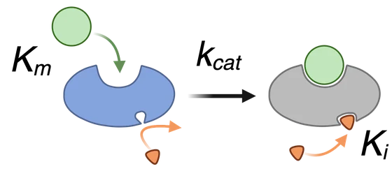
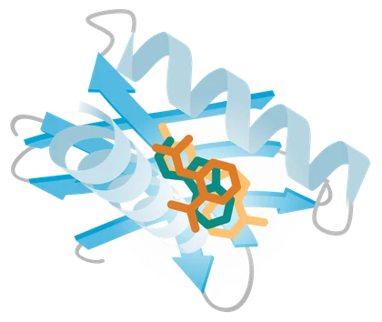
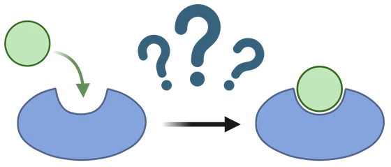

*Equal contribution · †Corresponding authors1BioSystems Engineering and Control (BiSECt) Lab, 2Robert Bosch Centre for Data Science and AI (RBCDSAI),3Centre for Integrative Biology and Systems mEdicine (IBSE), 4Wadhwani School of Data Science and AI,IIT Madras
KcatNet estimates how fast an enzyme turns substrate into product when substrate is plentiful. When its training data could include close relatives of the test proteins, it scored 0.49 ().
When we tested it on proteins with sequences unlike those it had trained on, its score fell to 0.13. If you’re working with an unfamiliar protein, that second score tells you more about what to expect.
We integrated records from databases into Leak-CURBER and retrained published models to see how their predictions held up on unfamiliar proteins, molecules and reactions.
Reactions
Enzymes
protein sequences
Metabolites
Measured values
kcat, KM, Ki, Kd, EC50 and IC50 rows
Enzyme–reaction pairs
Databases
Subtasks
Read the full abstract
We present Leak-CURBER, the largest multimodal, leakage-controlled benchmark for evaluating machine learning and deep learning models for enzymatic reactions. Leak-CURBER standardizes data from 10 biochemical databases and curates datasets with multimodal inputs, metrics, and leakage-controlled splits for 4 tasks. The benchmark comprises 10 subtasks: prediction of reaction outcomes (2), enzyme function (2), kinetic parameters (3), and protein–ligand binding (3). Leak-CURBER establishes new evaluation protocols that control for train/validation/test overlap across protein sequences and structures, molecule strings and structures, and reaction similarity, thereby exposing generalization failures of learning methods. Evaluating the state-of-the-art (SOTA) models on Leak-CURBER shows that their strong performance degrades sharply under these splits, often approaching random classification or retrieval performance, and near-zero regression performance. Leak-CURBER includes precomputed embeddings, continual benchmark releases, reproducible curation scripts, and a public leaderboard to support reliable comparison of enzymatic-reaction models. Leak-CURBER is publicly available at https://github.com/bisect-group/Leak-CURBER.
Overview. Follow the data from the source databases through ten prediction tasks. Panels: (A) data, (B) tasks, (C) splits, (D) model inputs. Open full size
The problem
New to enzymes?
Enzymes
An enzymatic reaction begins in your mouth when you chew bread. Your saliva contains an enzyme called that breaks down starch in the bread, releasing smaller sugars such as maltose. Starch is the for this reaction. Other help us make medicines, food, biofuels and detergents.
Why use machine learning
In a wet lab, researchers test which molecules bind to an enzyme, identify the products of a reaction and measure how fast it runs. Each experiment takes time and materials, so testing every enzyme with every candidate molecule is impractical. Researchers use results from the pairs they have tested to train models and choose which pairs to test next.
Data leakage
Suppose two nearly identical enzymes appear in a dataset. A random can put one in training and the other in the test set. A high score on that test tells us little about a protein from a different family.
Proteins
A similar sequence, or the same fold.
Molecules
The same scaffold, the core ring structure.
Reactions
The same reaction center, the atoms that change.
Data fragmentation
A reaction may have an entry in one database, a kinetic measurement in another and a different protein identifier in each. When researchers link these records independently, differences in the resulting datasets make model scores hard to compare.
Two records can share a biochemical clue even when their identifiers differ. Related proteins may have similar binding pockets, molecules may share a scaffold, and reactions may involve the same substrates. Each relationship gives a model a different shortcut.
Source of leakage
How it happens
Protein sequence
A test protein is a close of a training protein. It often shares catalytic residues, domains and binding pockets.
Protein structure
A test protein has the same fold or active-site shape as a training protein, even when the sequence identity is low.
Molecule and reaction
Test molecules or reactions share scaffolds or reaction centers with training ones, even when the strings differ.
Molecule 3D shape
Test molecules lie close to training molecules in a conformer embedding space, even when 2D fingerprints differ.
Annotation time
The training data holds knowledge that did not exist yet when a test record was made.
Exact entities
One sequence, molecule, reaction or assay key fills several rows. A random split by row puts copies on both sides.
Each task family has its own leakage routes. For kinetics, the same accession, mutants of an enzyme, the same substrate and the same publication can appear on both sides. For binding, they are recurring targets and series. For classification, they are proteins and related annotations. For retrieval, the test reaction can resemble training reactions, and the correct enzyme can be a homolog of a training enzyme.
Researchers have tested models on several kinds of unfamiliar data. For enzyme turnover (kcat), DLKcat split the data at random. TurNuP, CatPred and CataPro tested how well their models predicted turnover for enzymes whose sequences differed from those in training. ColdDTA held out drugs and proteins in binding tests. CARE and ReactZyme used more demanding splits for enzyme classification and retrieval.
The choice of split matters. If we group enzymes by sequence, a test enzyme can still act on a substrate the model has seen. If we group molecules by scaffold, a test protein can still belong to a familiar enzyme family.
How current benchmarks fall short
EnzymeMap and ECREACT focus on reaction modeling. CARE and ReactZyme cover enzyme classification and retrieval. ProteinShake includes a binding affinity task among its protein structure tasks. In this comparison, Leak-CURBER alone includes kinetics and covers all five tasks.
Dataset
Reactions
Enzymes
Pairs
Tasks
Inputs
Leakage control
Enzyme classification
Enzyme retrieval
Reaction outcome
Kinetics
Affinity
Sequence
Structure
ESP
1,379
12,156
18,351
✗No
✓Yes
✗No
✗No
✗No
✓Yes
✗No
✗No
EnzymeMap
16,776
12,749
46,356
✗No
✗No
✓Yes
✗No
✗No
✓Yes
✗No
✗No
ECREACT
62,222
6,289
62,222
✗No
✗No
✓Yes
✗No
✗No
✓Yes
✗No
✗No
CARE
48,392
174,744
–
✓Yes
✓Yes
✗No
✗No
✗No
✓Yes
✗No
✓Yes
ReactZyme
7,726
178,327
178,463
✗No
✓Yes
✗No
✗No
✗No
✓Yes
✗No
✓Yes
ProteinShake
–
97,930
–
✓Yes
✗No
✗No
✗No
✓Yes
✓Yes
✓Yes
✓Yes
Leak-CURBER
68,180
213,785
623,190
✓Yes
✓Yes
✓Yes
✓Yes
✓Yes
✓Yes
✓Yes
✓Yes
The Leak-CURBER dataset
Tasks
Kinetic parameters
How efficiently does the enzyme act?

kcatEnzyme, substrate → Turnover rate
Turnover rate: how many reactions one enzyme does each second.
Rows
55,878
Entities
20,593 proteins; 8,963 molecules; 3,054 ECs
Inputs
Enzyme sequence and structure; substrate SMILES, molecular graph, and conformer.
Splits
GR-seq, GR-SMILES, Time, P-seq, P-struct, Mol-2D, Mol-3D
Metrics
RMSE, MAE, R², PCC, SCC. We use standardized units and log-transform the measured values before scoring.
Sources
SABIO-RK, BRENDA
Notes
Among duplicate rows, we keep the highest value (in log10). The value of kcat varies a lot with assay conditions, and the highest value is the best-measured catalytic rate. The proteins in the molecule splits stay familiar to the model.
KMEnzyme, substrate → Substrate concentration at half the maximum reaction rate
The substrate concentration at which the enzyme reaches half its maximum reaction rate.
Rows
78,831
Entities
29,085 proteins; 12,118 molecules; 3,941 ECs
Inputs
Enzyme sequence and structure; substrate SMILES, molecular graph, and conformer.
Splits
GR-seq, GR-SMILES, Time, P-seq, P-struct, Mol-2D, Mol-3D
Metrics
RMSE, MAE, R², PCC, SCC. We use standardized units and log-transform the measured values before scoring.
Sources
SABIO-RK, BRENDA
Notes
We average duplicate rows in log space. This is the kinetic subtask most sensitive to the substrate.
KiEnzyme, inhibitor → Inhibition constant
Inhibition constant: how strongly an inhibitor blocks the enzyme.
Rows
177,793
Entities
5,936 proteins; 100,029 molecules; 1,548 ECs
Inputs
Enzyme sequence and structure; inhibitor SMILES, molecular graph, and conformer.
Splits
GR-seq, GR-SMILES, Time, P-seq, P-struct, Mol-2D, Mol-3D
Metrics
RMSE, MAE, R², PCC, SCC. We use standardized units and log-transform the measured values before scoring.
Sources
BRENDA, SABIO-RK, BindingDB
Notes
We average duplicate rows in log space.
Binding affinity
How strongly does a molecule interact with the protein?

KdProtein, ligand → Binding strength
Binding strength: how tightly a molecule binds the protein. Smaller means tighter.
Rows
58,675
Entities
3,811 proteins; 31,750 molecules
Inputs
Protein sequence and structure; ligand representation, molecular graph, and conformer.
Splits
GR-seq, GR-SMILES, Time, P-seq, P-struct, Mol-2D, Mol-3D
Metrics
RMSE, MAE, R², PCC, SCC. We use standardized units and log-transform the measured values before scoring.
Sources
BindingDB
Notes
We average duplicate rows in log space.
IC50Protein, ligand → Concentration for half of the inhibition
The concentration that gives half of the maximum inhibition. Like EC50, it is a measure of potency and depends on the assay.
Rows
1,374,479
Entities
5,839 proteins; 866,094 molecules
Inputs
Protein sequence and structure; ligand representation, molecular graph, and conformer.
Splits
GR-seq, GR-SMILES, Time, P-seq, P-struct, Mol-2D, Mol-3D
Metrics
RMSE, MAE, R², PCC, SCC. We use standardized units and log-transform the measured values before scoring.
Sources
BindingDB
Notes
This is the largest binding subtask.
EC50Protein, ligand → Concentration for half of the effect
The concentration that gives half of the maximum effect. It is a measure of potency and depends on the assay.
Rows
169,599
Entities
1,779 proteins; 123,839 molecules
Inputs
Protein sequence and structure; ligand representation, molecular graph, and conformer.
Splits
GR-seq, GR-SMILES, Time, P-seq, P-struct, Mol-2D, Mol-3D
Metrics
RMSE, MAE, R², PCC, SCC. We use standardized units and log-transform the measured values before scoring.
Sources
BindingDB
Notes
We average duplicate rows in log space.
Enzyme function
Which enzymatic function is associated with the reaction?

EC1EC2EC3EC4
Enzyme classificationEnzyme → EC label
Given an enzyme, predict its .
Rows
296,345
Entities
213,785 proteins; 6,182 ECs
Inputs
Enzyme sequence and structure.
Splits
GR-seq, Time, P-seq, P-struct
Metrics
EC level accuracy at Levels 1–4, from broad class to exact function.
Sources
Rhea, KEGG, SABIO-RK, BRENDA, UniProt
Enzyme retrievalReaction → EC label
For a given reaction, rank the candidate enzyme functions by . The candidate labels come from the proteins in that split.
Rows
110,501
Entities
60,961 reactions; 7,064 ECs
Inputs
Reaction SMILES as the query.
Splits
GR-rxnsmi, Time, DRFP, P-seq, P-struct
Metrics
EC level accuracy at Levels 1–4, from broad class to exact function.
Sources
Rhea, KEGG, SABIO-RK, BRENDA
Reaction outcome
What transformation occurs?
Forward predictionReactants → Products
Rows
85,972
Entities
68,180 reactions
Inputs
Reactant-side SMILES.
Splits
GR-rxnsmi, Time, DRFP
Metrics
Top-1 and after SMILES canonicalization. Invalid predictions count as incorrect.
Sources
Rhea, KEGG, SABIO-RK, BRENDA
RetrosynthesisProducts → Reactants
Rows
85,972
Entities
68,180 reactions
Inputs
Product-side SMILES.
Splits
GR-rxnsmi, Time, DRFP
Metrics
Top-1 and after SMILES canonicalization. Invalid predictions count as incorrect.
Sources
Rhea, KEGG, SABIO-RK, BRENDA
Data sources and curation
We start with Rhea and add reactions from KEGG, SABIO-RK and BRENDA, along with enzyme records, kinetic measurements and references. We merge duplicate records, standardize four-level EC numbers and strings, and check reaction balance. Each row links one reaction to one EC number.
We reserve licensed MetaCyc records for leaderboard testing and exclude them from training and public downloads.
AlphaFoldDB, ESMFold2 and ESM3 only supply structures. They are not among the databases.
Multimodal inputs
An represents a protein, molecule or reaction as a set of numbers a model can use. We release the embeddings we computed so others can reuse them.
More detail: the embedders
Embedder
Input
Output
ESMC
Protein sequence
Mean-pooled protein embedding
ESM3
Protein structure
Mean-pooled protein embedding
SMI-TED
Molecule (SMILES)
Molecule embedding
MolR
2D molecular graph
Molecular graph embedding
Uni-Mol2
3D molecular conformer
Mean embedding across conformers
ECFP
2D molecular fingerprint
1024-bit molecular fingerprint
Reaction fingerprint
2048-bit reaction fingerprint
Leakage-controlled splits
Leak-CURBER offers seven ways to split the data. Grouped random (GR) keeps identical keys together, whether the key is a sequence (GR-seq), molecule (GR-SMILES) or reaction (GR-rxnsmi). Time holds out newer records. The five similarity splits hold out proteins by sequence or structure (P-seq, P-struct), molecules by fingerprint or shape (Mol-2D, Mol-3D), or reactions by fingerprint (DRFP).
Try a split on a toy dataset
Imagine six proteins. Each letter stands for one amino acid.
Protein
Sequence
Year added
Set
A
MAGKT
2019
B
MAGKS
2022
C
PLVNA
2020
D
PLVNT
2024
E
FGDYS
2021
F
TQHLP
2024
The seven split types
Grouped-random (GR)
We use GR as the reference for performance on familiar data. Each subtask also has splits that reflect the inputs a model might encounter in a new application.
Rows that share a protein sequence (GR-seq), molecule (GR-SMILES) or reaction SMILES (GR-rxnsmi) go to the same set. A reaction and its reverse form one group. This removes exact repeats but keeps related rows close.
Similarity splits
Split
How similarity is measured
P-seq
Protein sequences. MMseqs2 compares sequence identity. Even the closest training match has low identity to the test protein.
P-struct
Protein structures. Foldseek detects shared folds even in distantly related proteins. We use an experimental structure when available, followed by AlphaFold, ESMFold2 and ESM3 in that order.
Mol-2D
2D molecular structure. We measure between Morgan fingerprints.
Mol-3D
3D molecular shape. We compare Uni-Mol2 embeddings of molecular conformers.
DRFP
Reactions. describe which parts of the molecules change from reactants to products.
For every similarity split, a test entity must fall below the threshold to all other entities. Above-threshold overlap is 0% by construction. The takes the next most dissimilar entities, so it is slightly easier than the test set.
Time
We order records by the protein’s UniProt annotation date. Later records go into validation and test.
Do the splits work?
Each split removes overlap on its own axis, and the other axis can still overlap. The table gives the share of test rows whose exact enzyme sequence or molecule key also appears in training. Each cell reads sequence overlap / molecule overlap, in %. Highlighted zeros mark the feature held out.
Split
kcat
KM
Ki
Kd
EC50
IC50
GR-seq
0.0 / 91.7
0.0 / 92.1
0.0 / 91.8
0.0 / 59.3
0.0 / 24.7
0.0 / 56.2
GR-SMILES
80.2 / 0.0
82.1 / 0.0
97.6 / 0.0
99.5 / 0.0
99.8 / 0.0
99.9 / 0.0
Time
0.5 / 78.2
0.4 / 83.1
0.9 / 45.7
0.3 / 38.3
0.0 / 26.1
0.1 / 33.1
P-seq
0.0 / 78.5
0.0 / 79.9
0.0 / 40.5
0.0 / 76.6
0.0 / 25.5
0.0 / 38.0
P-struct
0.0 / 70.9
0.0 / 71.1
0.0 / 27.0
0.0 / 40.3
0.0 / 7.4
0.0 / 36.6
Mol-2D
73.9 / 0.0
74.3 / 0.0
91.2 / 0.0
94.1 / 0.0
97.3 / 0.0
99.4 / 0.0
Mol-3D
76.8 / 0.0
75.5 / 0.0
91.5 / 0.0
93.9 / 0.0
97.9 / 0.0
99.3 / 0.0
More detail: comparison with earlier splitting strategies
Random splits measure interpolation. GR splits remove exact identifier overlap but allow proteins, related folds, scaffold and near-duplicate reactions on both sides.
Cluster-based splits do better. Sequence clusters group homologs, and Butina or BitBIRCH clustering groups similar fingerprints. These methods reduce redundancy, but cluster membership does not show that every pair across clusters is below a threshold.
ProteinShake and Leak-CURBER both use Foldseek, for different goals. ProteinShake builds structure clusters and samples clusters up to the split size. We compute the maximum LDDT of each protein against the whole dataset and fill the test set with the most isolated proteins.
DataSAIL assigns examples to folds to lower the total similarity across folds. We define novelty for each entity instead. No held-out protein has a sequence neighbor above the sequence threshold, and the same holds for structures, molecules and reactions.
Experimental setup
We retrained published on Leak-CURBER. We chose models with public code that could run on at least one subtask using their original inputs and architecture.
The three reaction outcome models were originally evaluated on USPTO patent reactions. We fine-tuned them on enzymatic reactions. Additional results are available for DLKcat, UniKP, MPEK and CatPred.
Training and scoring
Protocol
How we evaluated the models
Model settings
We kept the published settings without a new hyperparameter search. For CREEP and CLIPZyme, we kept the encoders frozen.
Data splits
Each model read the supplied training, validation and test files through a wrapper. We checked that each wrapper reproduced the original code’s outputs within numerical tolerance.
Reported scores
We report the mean and standard deviation from three runs on each split, using different random . Rows labeled “Original paper (other data)” give the published scores on other datasets and splits.
Reference predictors
We ran six simpler predictors on the same splits to see how much of the performance a standard method could explain.
Predictor type
How it works
Embedding models
XGBoost and MLP use the same precomputed embeddings.
Protein search
BLASTP searches by sequence and Foldseek by structure. Each assigns a test protein the EC labels of its closest training matches.
Feature-free predictors
For regression, one predictor uses the training mean. The other draws values from the training targets.
More detail: feature-free predictors
Both predictors use the same P-seq rows as each regression subtask. The training mean predicts the mean training log10 target. The expected-random predictor draws predictions from the training targets. Neither uses biochemical features. The strongest published baseline beats both predictors on all six subtasks.
Subtask
Learned R² range
Training-mean R²
Expected random R²
kcat
−0.04 to 0.13
−0.0017
−0.9363
KM
0.14 to 0.23
−0.0125
−1.0320
Ki
0.20 to 0.41
−0.2212
−1.0127
Kd
−0.21 to 0.03
−0.1594
−1.2767
EC50
−0.21 to 0.02
−0.2261
−1.4968
IC50
−0.10 to 0.22
−0.2008
−1.1826
Results
Kinetics →For KM, XGBoost and MLP each scored higher than every published baseline by R² on all seven splits.
Binding affinity →Structure-Free DTA scored 0.66 (R²) on GR-SMILES and 0.20 on GR-seq when predicting Kd.
Enzyme function →GraphEC assigned the exact EC label to 88.8% of enzymes on GR-seq and 50.7% on P-seq.
Reaction outcome →Chemformer predicted the correct product on its first try in 49.1% of cases on GR-rxnsmi and 23.9% on DRFP.
Explore the results
Control: do assay conditions help?
Conditions improve every P-seq metric, but R² stays below the training-mean predictor (−0.002). The gains on Time are close to seed variation.
MPEK takes pH and temperature as extra inputs. We trained it with and without them, over three seeds. Each assay is one row (61,131 rows) and keeps the split of its protein–substrate pair. We set missing values to pH 7.0 and 298.15 K. We score the maximum true and predicted log10kcat of each pair (2,777 P-seq and 2,509 Time test pairs), so these values do not compare with the main results.
Split
Conditions
RMSE
MAE
R²
PCC
SCC
P-seq
Disabled
1.900 ± 0.057
1.396 ± 0.021
−0.395 ± 0.084
0.220 ± 0.024
0.238 ± 0.010
P-seq
pH and temperature
1.696 ± 0.023
1.273 ± 0.018
−0.111 ± 0.030
0.284 ± 0.028
0.297 ± 0.024
Time
Disabled
1.512 ± 0.038
1.107 ± 0.021
0.075 ± 0.047
0.394 ± 0.041
0.394 ± 0.042
Time
pH and temperature
1.463 ± 0.027
1.077 ± 0.016
0.135 ± 0.031
0.427 ± 0.024
0.439 ± 0.022
Control: does a shift in targets explain the P-seq scores?
For both targets, the test mean lies about 0.4 training SDs above the training mean. A training-mean predictor scores R² −0.23 on EC50 and −0.16 on Kd. On EC50, BIND (−0.21) is close to this predictor, and BACPI (0.02) is above it. The shift explains only part of BIND’s negative R².
How different are the proteins held out on P-seq? The table compares the distributions of measured EC50 and Kd values in training and test, both on a log10 scale.
P-seq property
EC50
Kd
Training rows
152,699
52,815
Test rows
8,421
2,927
Training-target mean
−3.69
−3.70
Test-target mean
−3.08
−3.08
Mean shift
+0.61
+0.61
Training-target SD
1.44
1.63
Test-target SD
1.28
1.54
BIND R²
−0.21 ± 0.08
−0.21 ± 0.01
BACPI R²
0.02 ± 0.05
−0.01 ± 0.01
Control: how many test ECs are new?
Some test enzymes have EC labels that never appear in training. A classifier restricted to its training labels will miss these cases. A retrieval model can still rank them because its candidates include all proteins in the split. The table shows how often this happens.
Subtask
GR-seq / GR-rxnsmi
DRFP
Time
P-seq
P-struct
Classification
0.6%
–
7.9%
9.6%
10.9%
Retrieval
2.1%
1.9%
25.3%
4.3%
5.0%
Control: do the training corpora overlap with our test reactions?
These models start from other training corpora. The table gives the share of our test reactions whose maximum similarity to a corpus is at least 0.11. This is the threshold of our DRFP split, used here only as a cutoff. The DRFP split lowers the share sharply for Chemformer, but a high-similarity tail remains for MEGAN. Each corpus holds one exact test match (0.05%), in MEGAN with DRFP and in Chemformer with GR-rxnsmi.
Training corpus
Reactions
GR-rxnsmi %
Time %
DRFP %
MEGAN (USPTO-FULL)
902,559
34.3
25.1
26.1
Chemformer (USPTO-50K)
40,028
50.9
54.3
0.6
Limitations
Assay conditionsSome enzymes and organisms have far more measurements than others. Most records omit pH and temperature, which makes measurements from different labs harder to compare.
Protein structuresPredicted structures can miss the shape a protein takes when a ligand binds. On P-struct, we cannot tell how much of a score change comes from the source of the structure.
Pretraining overlapEven on the DRFP split, some test reactions resemble patent reactions the models saw during pretraining. That overlap can raise reaction prediction scores.
Use Leak-CURBER
Download the data
Download the combined for each leaderboard split from Hugging Face. Embeddings are available separately. The full datasets and other splits are not released.
Use the to build datasets, compute embeddings, create splits and train baselines. Harvard Dataverse provides the released rows, structures, conformers, atom-mapped reactions and baseline checkpoints.
Each subtask has its own leaderboard and fixed test split. A score of 1 is perfect. A score of 0 matches the reference prediction, such as predicting the training mean. The minimum score is −1.
To choose each leaderboard split, we compared the published baselines across all eligible splits. After excluding GR, we selected the split with the lowest average leaderboard score. Every submission for that subtask faces the same test.
Subtask
Leaderboard split
kcat
P-seq
KM
P-struct
Ki
P-struct
Kd
P-seq
EC50
P-seq
IC50
Time
Enzyme classification
P-seq
Enzyme retrieval
DRFP
Forward prediction
DRFP
Retrosynthesis
DRFP
How the score works
Each subtask has two metrics. Regression uses SCC and MSE on log10 targets. Enzyme classification and retrieval use EC level accuracy at Level 4 and Level 1, counting only the first guess. Forward prediction and retrosynthesis use Top-1 and Top-10 exact match.
A zero-point predictor B sets the zero point. For SCC, B is 0. For MSE, B is the training-mean predictor. For EC level accuracy, B always predicts the most frequent training EC. For Top-k, B is 0. The perfect value \(P_m\) is 1, or 0 for MSE.
Let \(\mathcal{M}_t\) be the two metrics of subtask t, and let m be one of them. The score is
Here \(M_{tm}\) is the model result and \(B_{tm}\) is the zero-point result. A negative score is worse than the zero-point predictor.
BibTeX
@inproceedings{
shums2026leakcurber,
title={Leak-{CURBER}: A Leakage-Controlled Multimodal Evaluation Benchmark for Enzymatic Reaction Tasks},
author={Adhil Ahmed P M Shums and Roshan Balaji and Nirav Pravinbhai Bhatt},
booktitle={The Fortieth Annual Conference on Neural Information Processing Systems Evaluations and Datasets Track},
year={2026},
url={https://openreview.net/forum?id=Tn4JHggWJI}
}